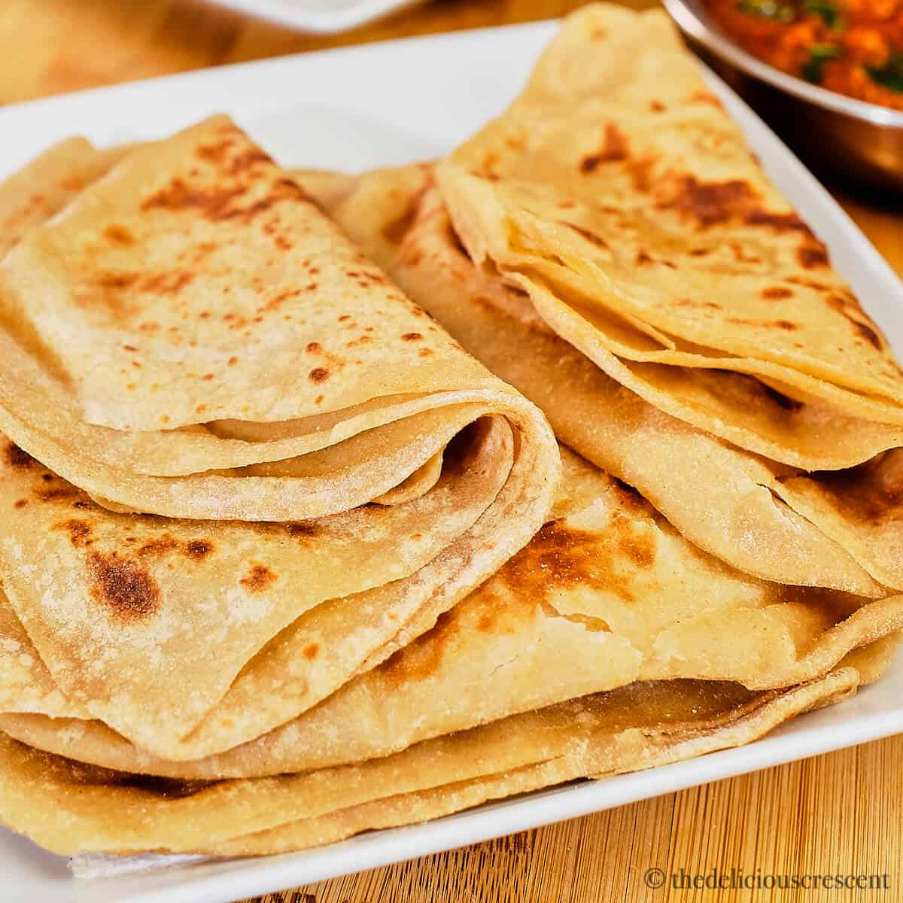

Paratha is a flatbread native to South Asia, prevalent throughout the modern-day nations of India, Sri Lanka, Pakistan, Nepal, Bangladesh, Maldives, Afghanistan, Myanmar, Malaysia, Singapore, Mauritius, Fiji, Guyana, Suriname, and Trinidad and Tobago where wheat is the traditional staple.
